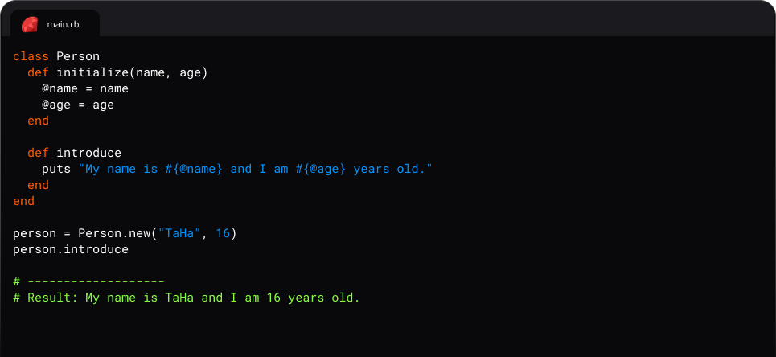
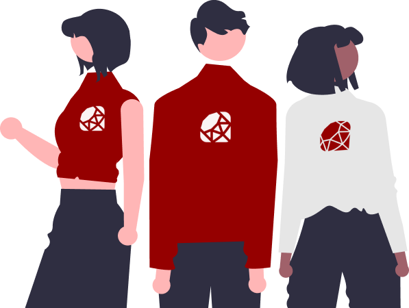

زبان روبی به دلیل داشتن
سینتکس ظریف و رسا معروف است! بطوری
که به توسعه دهندگان خود این امکان را ارائه میدهد روی
شیوه حل مسئله
تمرکز کنند بی آنکه درگیر سینتکسی پیچیده یا
boilorplate-code شوند.
روبی تخصص خاصی در زمینه
Rapid Development یا همان توسعه
سریع دارد که به شما اجازه میدهد در کمترین مدت زمان ممکن به توسعه
Feature های پروژه های خود
بپردازید.

یکی از ویژگیهای سادهبودن روبی، استفاده از دستوراتی است که به راحتی قابل فهم و خوانا هستند. به علاوه، روش ارائه کد در روبی ساده است و تنها با استفاده از فاصله و تورفتگی، کد برنامه در بلوکهای منظم و خوانا قابل خواندن و اجراست.
روبی دارای جامعه ای بسیار فعال و حمایتگر است که بطور گسترده ای در توسعه بسیاری از کتابخانه ها مشارکت میکنند. جامعه روبی یکی از مهم ترین دلایلی است توسعه سریع و قدرتمند را امکان پذیر میکند.

Web Development
استفاده از فریمورکهای معروفی مانند
Ruby on Rails ،Sinatra
و Hanami
نیز به کاربران روبی کمک میکند تا برنامههای وب پویا و حرفهای بسازند.
این فریمورکها به کاربران امکان میدهند تا با استفاده از تنها چند خط
کد، برنامههای وب پیشرفتهای را بسازند. با توجه به اینکه روبی یک زبان
انعطاف پذیر و قابل توسعه است، کاربران میتوانند بر اساس نیاز خود،
برنامههای وب پیشرفتهای بسازند.
همچنین، جامعه فعال کاربران روبی، بستری برای ارتباط و تبادل دانش و
تجربیات در حوزه توسعه وب فراهم کردهاند، که به کاربران روبی کمک میکند
تا تواناییهای خود را در این زمینه تقویت کنند.